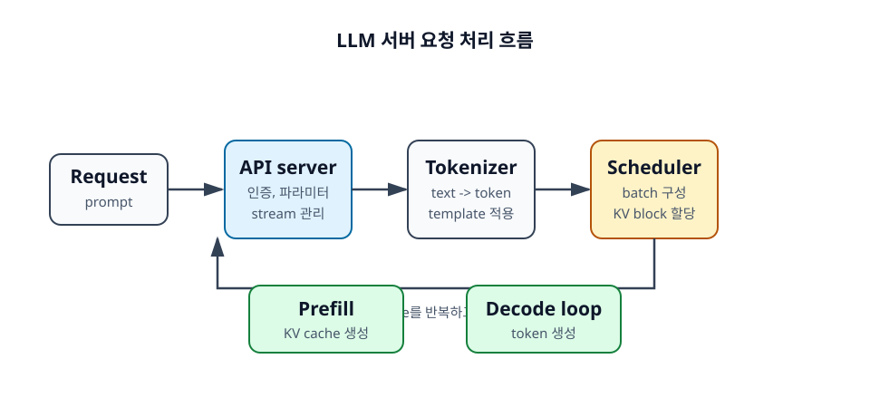

16장. LLM 서버는 어떻게 구성되는가¶
LLM 서버는 단순히 모델 객체에 generate()를 호출하는 프로그램이 아니다. 운영 환경에서는 API 요청을 받고, tokenization을 수행하고, 여러 요청을 scheduling하고, GPU worker에서 prefill과 decode를 실행하고, token을 streaming으로 돌려준다.
이 장에서는 vLLM, SGLang, TensorRT-LLM 같은 serving 시스템을 이해하기 위한 공통 구조를 살펴본다.

학습 목표¶
- LLM serving 시스템의 주요 구성 요소를 이해한다.
- 요청이 tokenize, prefill, decode, streaming으로 이어지는 흐름을 설명한다.
- 개발자가 확인해야 하는 기본 설정을 파악한다.
16.1 기본 구성 요소¶
LLM 서버는 여러 컴포넌트가 협력해 동작한다. 작은 실습에서는 하나의 프로세스 안에 모두 들어 있을 수 있지만, 개념적으로는 API server, tokenizer, scheduler, worker를 나누어 볼 수 있다.
16.1.1 API server¶
API server는 외부 요청을 받는 입구다. OpenAI-compatible API를 제공하는 경우 /v1/chat/completions 같은 endpoint를 통해 요청을 받는다. API server는 인증, rate limit, request validation, streaming connection 관리를 담당할 수 있다.
개발자 입장에서는 API server가 받는 parameter가 실제 엔진 설정과 어떻게 연결되는지 이해해야 한다. max_tokens, temperature, stream, stop, response_format 같은 값이 decode 동작과 latency에 영향을 준다.
16.1.2 Scheduler¶
Scheduler는 어떤 요청을 언제 GPU에 넣을지 결정한다. LLM serving에서 scheduler는 매우 중요하다. 요청마다 prompt 길이, output 길이, KV cache 크기, priority가 다르기 때문이다.
좋은 scheduler는 GPU를 놀리지 않으면서도 latency SLO를 지키려고 한다. Continuous batching, chunked prefill, KV block allocation 같은 기능이 scheduler와 연결된다.
16.1.3 Worker¶
Worker는 실제 모델을 GPU에 올리고 prefill과 decode를 수행한다. 단일 GPU worker일 수도 있고, Tensor Parallel 또는 Pipeline Parallel로 묶인 여러 GPU worker일 수도 있다.
Worker는 model weights, KV cache, temporary buffer를 관리한다. GPU memory utilization 설정이 너무 높으면 더 많은 요청을 처리할 수 있지만 OOM 위험도 커진다.
16.1.4 Tokenizer¶
Tokenizer는 텍스트를 token id로 바꾼다. Chat template을 적용하고, system/user/assistant 메시지를 모델이 기대하는 형식으로 변환한다. Tokenization은 CPU에서 수행되는 경우가 많아, 긴 prompt와 높은 요청량에서는 CPU 병목이 될 수 있다.
Tokenizer 설정이 모델과 맞지 않으면 품질 문제뿐 아니라 prefix caching 실패도 생길 수 있다. 같은 텍스트라도 template이 다르면 token sequence가 달라질 수 있다.
16.2 요청 처리 흐름¶
LLM 요청은 대략 request 수신, tokenization, scheduling, prefill, decode, streaming 순서로 처리된다. 각 단계는 서로 다른 병목을 만들 수 있다.
16.2.1 Request가 들어온다¶
사용자의 request에는 prompt 또는 chat messages, generation parameter, stream 여부, output 제한 등이 포함된다. API server는 이 요청을 검증하고 내부 request 객체로 변환한다.
이 단계에서 rate limit, 인증, tenant별 quota도 적용될 수 있다. 운영 서비스에서는 모델 성능만큼이나 요청 제어가 중요하다.
16.2.2 Tokenize한다¶
텍스트는 token id sequence로 변환된다. 이때 chat template, tool schema, system prompt가 함께 들어갈 수 있다. Token 수가 계산되고, max model length를 초과하는지 확인한다.
Token 수는 이후 scheduling과 비용 계산의 기준이 된다.
16.2.3 Prefill을 수행한다¶
Worker는 prompt token을 처리하고 KV cache를 생성한다. Prefill이 긴 요청은 TTFT를 증가시킬 수 있다. Scheduler는 긴 prefill이 decode 중인 요청을 과도하게 방해하지 않도록 chunked prefill 같은 전략을 사용할 수 있다.
16.2.4 Decode를 반복한다¶
첫 token 이후에는 decode loop가 반복된다. 각 step에서 다음 token logits를 계산하고, sampling 또는 constrained decoding으로 token을 선택한다. 새 token의 KV cache도 추가된다.
Decode는 TPOT와 streaming 체감 속도에 직접 연결된다.
16.2.5 Streaming으로 응답한다¶
Streaming이 켜져 있으면 서버는 생성된 token 또는 text chunk를 클라이언트에 순차적으로 보낸다. Streaming은 전체 생성 시간을 줄이지는 않지만, 사용자가 첫 결과를 빨리 볼 수 있게 해 준다.
Streaming 구현에서는 backpressure, client disconnect, partial response logging도 고려해야 한다.
16.3 개발자가 확인해야 할 설정¶
LLM 서버를 띄울 때 자주 만나는 설정은 성능과 안정성에 직접 영향을 준다. 기본값을 그대로 쓰기보다 workload에 맞게 이해하고 조정해야 한다.
16.3.1 Model path¶
Model path는 사용할 model weights와 tokenizer를 가리킨다. Hugging Face repository 이름일 수도 있고, 로컬 디렉터리일 수도 있다. 모델과 tokenizer가 맞지 않으면 품질과 tokenization 문제가 생긴다.
16.3.2 Max model length¶
Max model length는 허용할 최대 context length다. 너무 낮으면 긴 요청을 처리할 수 없고, 너무 높으면 KV cache memory 예약과 OOM 위험이 커질 수 있다. 실제 workload의 token 분포를 보고 설정해야 한다.
16.3.3 GPU memory utilization¶
GPU memory utilization은 엔진이 GPU memory를 얼마나 공격적으로 사용할지 정하는 설정이다. 값을 높이면 더 많은 KV cache 공간을 확보할 수 있지만, temporary buffer와 fragmentation 여유가 줄어 OOM 위험이 커질 수 있다.
16.3.4 Tensor parallel size¶
Tensor parallel size는 모델 layer 내부 계산을 몇 GPU에 나눌지 정한다. 모델이 GPU 한 장에 들어가지 않거나 latency를 줄이고 싶을 때 조정한다. 하지만 TP size가 커질수록 통신 비용이 늘 수 있으므로 interconnect와 모델 크기를 함께 봐야 한다.
정리¶
LLM 서버는 API server, tokenizer, scheduler, worker가 연결된 시스템이다. 요청은 tokenization을 거쳐 prefill과 decode를 수행하고, streaming으로 응답된다. 개발자는 model path, max model length, GPU memory utilization, tensor parallel size 같은 설정이 memory와 latency에 어떤 영향을 주는지 이해해야 한다.
점검 질문¶
- Scheduler는 LLM 서버에서 왜 중요한가?
- Max model length 설정은 어떤 자원 사용량에 영향을 주는가?
다음 장으로¶
다음 장에서는 여러 요청을 효율적으로 처리하기 위한 batching과 scheduling을 다룬다.